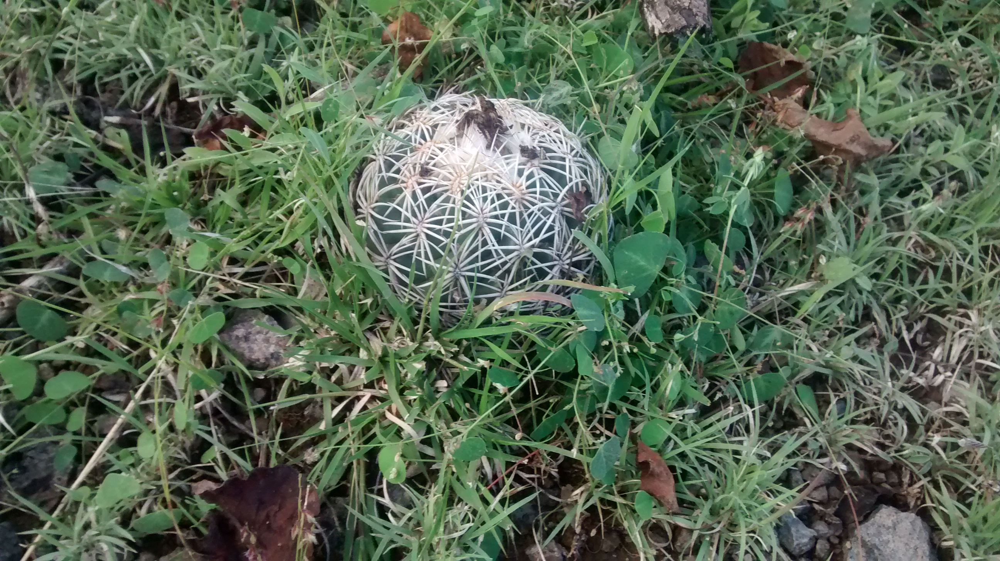
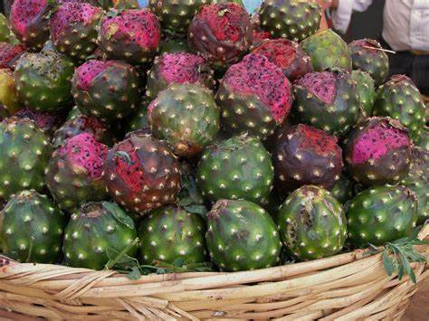
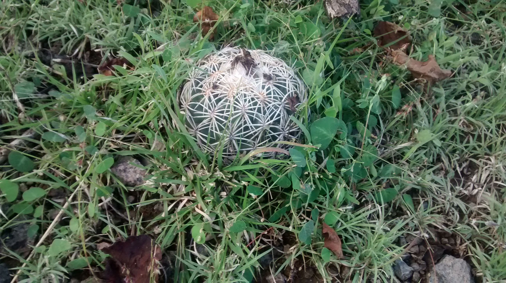
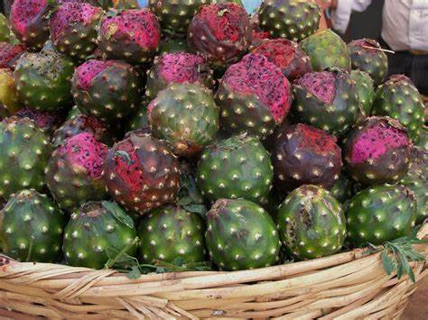

Tengo 20 años de edad, soy una estudiante universitaria, estudio en la Universidad Politécnica de Otzolotepec, actualmente vivo en el Municipio de Toluca en un pequeño pueblo llamado San Mateo Otzacatipan
Me gusta viajar y conocer los pueblos de mi país, me gusta mucho caminar por las montañas y montes, mi lugar favorito son los montes de un pueblo llamado "El rosario Micaltepec" que se encuentra en Puebla, en este lugar vivían mis abuelos, y cuando estabamos aburridos soliamos ir a caminar a los montes para recoger leña o frutos, mi fruto favorito es la pitaya es muy común en el mes de mayo y se recolecta en los montes, otra cosa que solíamos recolectar son los cactus, hay de todos los tamaños en estos montes.
  
 
Di mi nombre» (estilizado en mayúsculas como «DI MI NOMBRE»), originalmente «DI MI NOMBRE - Cap.8: Éxtasis», es una canción de la cantante y compositora española Rosalía. Fue lanzada el 30 de octubre de 2018 como el tercer sencillo de su segundo álbum de estudio, El mal querer (2018).
Esta canción fue lanzada el 7 de Noviembre del 2017, de su album Сладкая жизнь
Esta canción se publico el dia 2O de Abril del año 2015 de su album BL4QKFY4H
Esta página la hice con la finalidad de que puedan conocer un poco más sobre mi, y mis gustos músicales y las actividades que más me gustan realizar. les dejo esta canción de Rozalén llamada "será mejor" y espero que la disfruten tanto como yo lo hago, GRACIAS POR LEER.